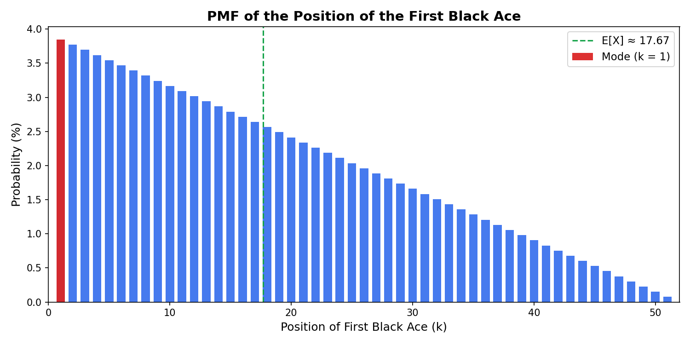

First Black Ace
Difficulty: ⭐⭐
Topics: Probability, Order Statistics
Tags: Discrete Probability, Order Statistics, Mode vs Mean, Card Probabilities
Problem Statement
Suppose a deck of 52 playing cards is thoroughly shuffled. You are asked to guess in advance the position of the first black ace. This procedure is repeated many times; each time, this deck is thoroughly shuffled, and each time, you guess the position of the first black ace.
What position in the deck should you guess so that if the procedure is repeated many times, you would maximize your chances of guessing correctly the position of the black ace?
Solution Outline
At first glance, many of us might guess the familiar answer of 53/3 or around 17th-18th position but that would be incorrect.
There is a subtle point here that is easy to miss; the problem asks for the "most likely" position of the first black ace, not the "expected" position. This is the difference between the mode and the mean of a distribution.
So how do we determine the mode of the position of the first black ace or in other words, the most likely position.
First we define the distribution.
We can think of the two black aces as being placed uniformly at random among the 52 positions. Let \(A_1\), \(A_2\) be the positions of the two aces, Define
the position of the first black ace. For \(X = k\), one ace must be at k and the other must be somewhere between \(k+1\) and 52. Once one ace is fixed at position k, the second ace has \((52 - k)\) possible positions.
What about total ways to choose two distinct positions out of 52 ?
Therefore,
Now we have the distribution and all the heavy lifting is done. To find the most likely position, we simply need to maximise the probability function defined above.
We note here that the numerator \((52 - k)\) is strictly decreasing as k increases which means \(k = 1\) has the largest probability and the probabilities decrease as we move deeper into the deck.
Hence, the mode of the distribution is:
The somewhat surprising answer is that we should guess that the top card is the first black ace in the deck!
It's worth pausing here a moment. While we have solved that position 1 is the most likely, some would still argue it is not likely in any absolute sense
As noted earlier, the distribution is strictly decreasing but the relative difference between adjacent probabilities is quite small. So no single position is a certain "good guess" but every position closer to the start strictly dominates every position further from it.
What we're really solving here is that among 51 positions, position 1 gives you the best odds and in a repeated game, that edge compounds. This is precisely why the mode, not the mean, is the right statistic to optimize when payoff is for an exact match.
By symmetry, it can also be argued that the most likely position for the second black ace (the maximum of \(A_1\), \(A_2\)) is the bottom card of the deck.

Mode vs Mean
As mentioned earlier, mode is not equal to mean here.
This matters as the expected position answers the question: if we repeat this procedure forever, where does first black ace land on average?
Mathematically,
So, the math indeed comes full circle. The expected position is around 17th card, confirming the common intuition. But that is not the most likely single position.
What we're not doing in this problem is maximizing the average outcome. We are maximizing the probability of guessing a single value correctly which means identifying the largest term in the probability mass function.
Key Insight
The key insight here is recognizing that the problem is asking about the most likely position (the mode), not the expected position (the mean). Once the distribution of the two black aces is defined correctly and the relationship of probability with k established, the answer follows immediately.
The surprise comes from how often we instinctively think in terms of averages, even when the question is not asking for one.